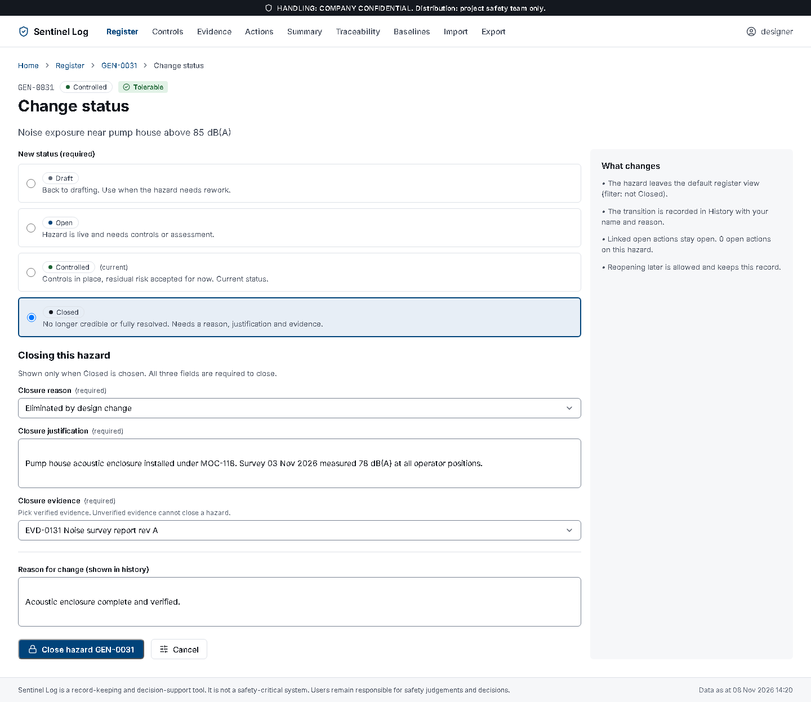

UC-21: Change status, close or transfer hazard. Actor: Hazard owner
Main flow
- editor opens UAT-0004 and opens Change status; the form lists target statuses with the configured labels (req-94).
- editor moves UAT-0004 from open to controlled with a reason; detail shows the new status and the history tab gains one row naming the actor and reason (req-3, req-78).
- editor closes UAT-0004 with closure reason out of scope, a justification, and evidence; detail shows the Closure block with reason, justification, and evidence, and history gains the closing row (req-118).
- editor reopens UAT-0004 to open; closure facts clear and history keeps the closed period rows (req-3, req-78).
Stills

Not in release: Risk acceptance (UC-20) and reassessment chains (UC-22) are not in this release. No uc-20.html or uc-22.html pages exist.